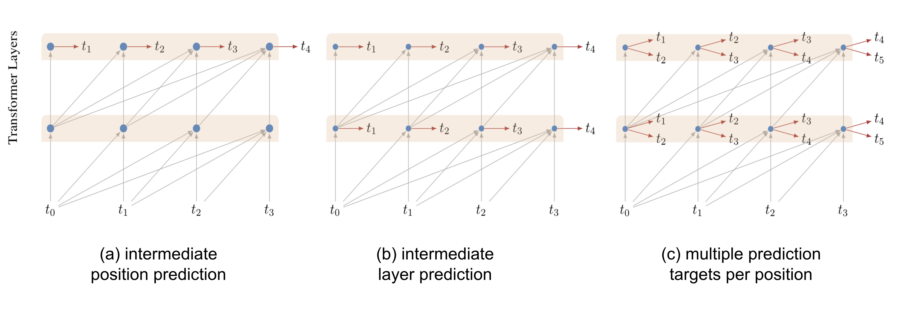
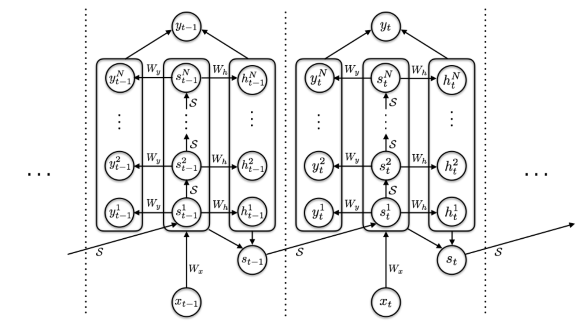
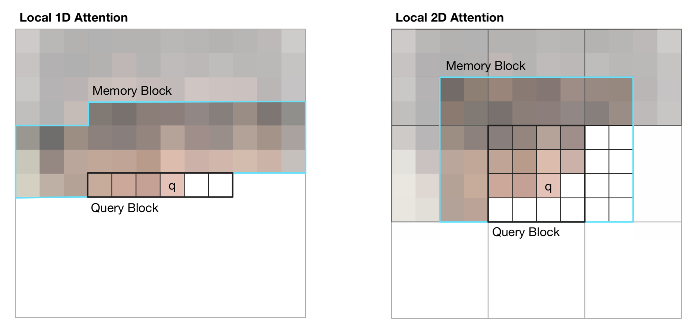
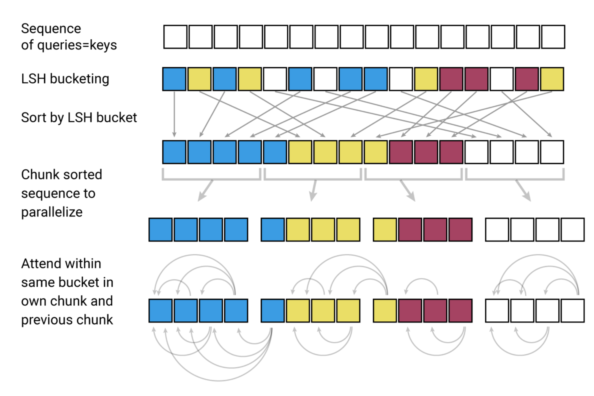
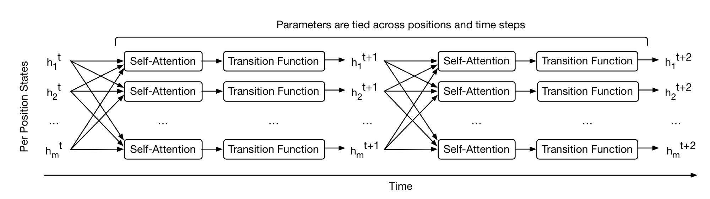
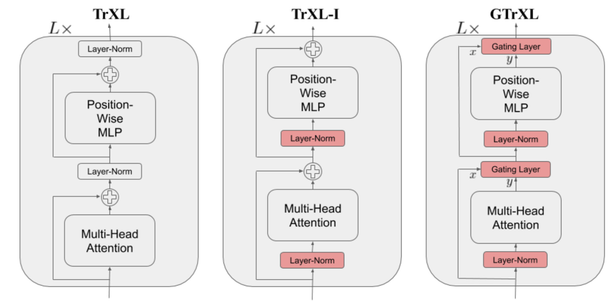

目录
- Attention and Self-Attention
- Multi-Head Self-Attention
- Transformer
- Adaptive Computation Time (ACT)
- Improved Attention Span Longer Attention Span (Transformer-XL) Adaptive Attention Span Localized Attention Span (Image Transformer)
- Less Time and Memory Cost Sparse Attention Matrix Factorization (Sparse Transformers) Locality-Sensitive Hashing (Reformer)
- Make it Recurrent (Universal Transformer)
- Stabilization for RL (GTrXL)
- Citation
- Reference
[2023-01-27 更新：时隔近三年，我对本文进行了大幅重构，加入了 2020 年以来众多新的 Transformer 模型。增强版内容请见：Transformer 家族 2.0 版。关于该主题的最新信息请参考该版本。]
自从我上次发表关于 注意？注意！ 的文章以来，已经过去了近两年时间。Transformer 的各种新版本和改进工作激励我再次撰写一篇专题文章，重点讨论如何改进 vanilla Transformer，以实现更长的注意力范围、更低的内存和计算消耗、更好的强化学习任务解决能力等。
符号说明
| Symbol | Meaning |
|---|---|
| d | The model size / hidden state dimension / positional encoding size. |
| h | The number of heads in multi-head attention layer. |
| L | The segment length of input sequence. |
| \mathbf{X} \in \mathbb{R}^{L \times d} | The input sequence where each element has been mapped into an embedding vector of shape d, same as the model size. |
| \mathbf{W}^k \in \mathbb{R}^{d \times d_k} | The key weight matrix. |
| \mathbf{W}^q \in \mathbb{R}^{d \times d_k} | The query weight matrix. |
| \mathbf{W}^v \in \mathbb{R}^{d \times d_v} | The value weight matrix. Often we have d_k = d_v = d. |
| \mathbf{W}^k_i, \mathbf{W}^q_i \in \mathbb{R}^{d \times d_k/h}; \mathbf{W}^v_i \in \mathbb{R}^{d \times d_v/h} | The weight matrices per head. |
| \mathbf{W}^o \in \mathbb{R}^{d_v \times d} | The output weight matrix. |
| \mathbf{Q} = \mathbf{X}\mathbf{W}^q \in \mathbb{R}^{L \times d_k} | The query embedding inputs. |
| \mathbf{K} = \mathbf{X}\mathbf{W}^k \in \mathbb{R}^{L \times d_k} | The key embedding inputs. |
| \mathbf{V} = \mathbf{X}\mathbf{W}^v \in \mathbb{R}^{L \times d_v} | The value embedding inputs. |
| S_i | A collection of key positions for the i-th query \mathbf{q}_i to attend to. |
| \mathbf{A} \in \mathbb{R}^{L \times L} | The self-attention matrix between a input sequence of length L and itself. \mathbf{A} = \text{softmax}(\mathbf{Q}\mathbf{K}^\top / \sqrt{d_k}). |
| a_{ij} \in \mathbf{A} | The scalar attention score between query \mathbf{q}_i and key \mathbf{k}_j. |
| \mathbf{P} \in \mathbb{R}^{L \times d} | position encoding matrix, where the i-th row \mathbf{p}_i is the positional encoding for input \mathbf{x}_i. |
Attention 与 Self-Attention
Attention 是神经网络中的一种机制，模型可以通过选择性地关注给定数据中的特定部分来做出预测。注意力的强度由学习到的权重量化，因此输出通常表现为加权平均的形式。
Self-attention 是一种特殊的注意力机制，模型利用同一数据样本中其他部分的信息来对样本的某一部分进行预测。从概念上讲，它与 non-local means 非常相似。还需要注意的是，self-attention 是置换不变的（permutation-invariant），换句话说，它是作用于集合的操作。
Attention / Self-Attention 有多种形式，Transformer（Vaswani et al., 2017）采用的是缩放点积注意力（scaled dot-product attention）：给定查询矩阵 \mathbf{Q}、键矩阵 \mathbf{K} 和值矩阵 \mathbf{V}，输出是值向量的加权和，其中每个值对应的权重由查询与对应键的点积决定：
对于查询向量和键向量 \mathbf{q}_i, \mathbf{k}_j \in \mathbb{R}^d（查询和键矩阵中的行向量），其标量得分计算如下：
如果感兴趣，可以参考我之前的 注意？注意！，其中介绍了其他类型的注意力机制。
Multi-Head Self-Attention
多头自注意力模块是 Transformer 的核心组件。它并非只计算一次注意力，而是将输入拆分成多个更小的子空间，然后并行地在每个子空间上计算缩放点积注意力。独立的注意力输出被拼接在一起，再经过线性变换得到最终的期望维度。
其中 [.;.] 表示拼接操作，\mathbf{W}^q_i, \mathbf{W}^k_i \in \mathbb{R}^{d \times d_k/h}, \mathbf{W}^v_i \in \mathbb{R}^{d \times d_v/h} 是权重矩阵，用于将维度为 L \times d 的输入嵌入映射为查询、键和值矩阵。\mathbf{W}^o \in \mathbb{R}^{d_v \times d} 是输出线性变换层。所有权重均在训练过程中学习得到。

Transformer
Transformer（为与后续改进版本区分，本文将其称为“vanilla Transformer”；Vaswani, et al., 2017）采用编码器-解码器架构，这在许多 注意？注意！ 模型中很常见。后来简化后的 Transformer 在语言建模任务中表现出色，例如仅使用编码器的 通用语言模型 或仅使用解码器的 通用语言模型。
编码器-解码器架构
编码器生成基于注意力的表示，能够从大量上下文中定位特定信息。它由 6 个完全相同的模块堆叠而成，每个模块包含两个子模块：一个多头自注意力层和一个逐位置全连接前馈网络。所谓逐位置，是指对序列中的每个元素都应用相同的线性变换（使用相同权重）。这也可以看作是滤波器大小为 1 的卷积层。每个子模块都带有残差连接和层归一化。所有子模块输出的数据维度均为 d。
Transformer 解码器的功能是从编码后的表示中提取信息。其架构与编码器非常相似，不同之处在于每个重复模块中包含两个多头注意力子模块而非一个。第一个多头注意力子模块被施加掩码，以防止当前位置关注未来信息。
位置编码
由于自注意力操作具有置换不变性，必须使用合适的位置编码来为模型提供顺序信息。位置编码 \mathbf{P} \in \mathbb{R}^{L \times d} 与输入嵌入的维度相同，因此可以直接加在输入上。Vanilla Transformer 考虑了两种位置编码方式：
(1) 正弦位置编码定义如下，其中 i=1,\dots,L 表示 token 的位置，\delta=1,\dots,d 表示维度：
这样，位置编码的每个维度对应于不同波长的正弦曲线，波长范围从 2\pi 到 10000 \cdot 2\pi。

(2) 学习的位置编码，正如其名称所示，为每个位置分配一个可学习的列向量来编码其绝对位置（Gehring, et al. 2017）。
后续改进
在 vanilla Transformer 之后，Al-Rfou et al. (2018) 引入了一组辅助损失，使其能够在字符级语言建模任务上训练更深的 Transformer 模型，并超越了 LSTM。他们使用了以下几种辅助任务：
- 不仅在序列末尾产生一个预测，还要求每个中间位置也做出正确预测，迫使模型在较小的上下文（例如上下文窗口开头的前几个 token）下进行预测。
- 每个中间 Transformer 层也被用于做出预测。随着训练推进，较低层对总损失的贡献权重逐渐降低。
- 序列中的每个位置可以预测多个目标，即对未来多个 token 进行预测。

Adaptive Computation Time (ACT)
自适应计算时间（简称 ACT；Graves, 2016）是一种机制，用于动态决定循环神经网络在每个时间步需要执行多少计算步骤。distill.pub 上有一篇很棒的 教程 介绍 ACT。
假设我们有一个 RNN 模型 \mathcal{R}，它包含输入权重 W_x、参数化的状态转移函数 \mathcal{S}(.)、一组输出权重 W_y 和输出偏置 b_y。给定输入序列 (x_1, \dots, x_L)，输出序列 (y_1, \dots, y_L) 通过以下方式计算：
ACT 允许上述 RNN 在每个输入元素上执行可变数量的计算步骤。多个计算步骤会产生一系列中间状态 (s_t^1, \dots, s_t^{N(t)}) 和输出 (y_t^1, \dots, y_t^{N(t)})——它们共享相同的状态转移函数 \mathcal{S}(.)、相同的输出权重 W_y 和偏置 b_y：
其中 \delta_{n,1} 是一个二进制标志，表示是否已递增输入步数。
计算步数 N(t) 由一个额外的 S 型停止单元 h 决定，该单元带有权重矩阵 W_h 和偏置 b_h，在第 n 个即时步骤为第 t 个输入元素输出停止概率 p_t^n：
为了允许计算在单步后即可停止，ACT 引入了一个很小的常数 \epsilon（例如 0.01），使得累积概率一旦超过 1-\epsilon，计算就会停止。
其中 M 是允许的最大即时步数上限。
最终的状态和输出通过均值场更新得到：

为了避免在每个输入上进行不必要的思考，ACT 在损失函数中加入一个思考代价 \mathcal{P}(x) = \sum_{t=1}^L N(t) + R(t) ，以鼓励更少的中间计算步骤。
改进注意力范围
改进注意力范围的目标是让自注意力机制能够利用更长、更高效且更灵活的上下文。
更长的注意力范围 (Transformer-XL)
Vanilla Transformer 的注意力范围是固定且有限的。在每次更新时，模型只能关注同一段内的其他元素，信息无法在分隔开的固定长度段之间流动。
这种上下文分割导致了几个问题：
- 模型无法捕捉非常长期的依赖关系。
- 在每个段的前几个 token 缺乏足够上下文时，预测非常困难。
- 评估代价高昂。每当段向右移动一位时，新的段需要从头重新处理，尽管其中存在大量重叠的 token。
Transformer-XL（Dai et al., 2019；“XL”表示“extra long”）通过两个主要修改解决了上下文分割问题：
- 在段之间复用隐藏状态。
- 采用一种适用于复用状态的新型位置编码。
隐藏状态复用
通过持续使用前一段的隐藏状态，模型引入了段之间的循环连接。
我们将模型中第 n 层、第 (\tau + 1) 段的隐藏状态记为 \mathbf{h}_{\tau+1}^{(n)} \in \mathbb{R}^{L \times d}。除了同一段最后一层的隐藏状态 \mathbf{h}_{\tau+1}^{(n-1)} 外，它还依赖于前一段同一层的隐藏状态 \mathbf{h}_{\tau}^{(n)}。通过整合来自先前隐藏状态的信息，模型将注意力范围大幅扩展到过去，跨越多个段。
注意，键和值都依赖于扩展后的隐藏状态，而查询只使用当前步的隐藏状态。拼接操作 [. \circ .] 沿序列长度维度进行。
相对位置编码
为了适应这种新的注意力范围形式，Transformer-XL 提出了一种新的位置编码。如果继续使用 vanilla Transformer 的绝对位置编码，那么前一段和当前段会被赋予相同的编码，这是我们不希望看到的。
为了让位置信息能够连贯地在段之间流动，Transformer-XL 改用相对位置编码。因为只要知道位置偏移量就足以做出良好预测，即查询 \mathbf{q}_{\tau, i} 与键 \mathbf{k}_{\tau, j} 之间的相对距离 i-j。
如果忽略 softmax 中的标量 1/\sqrt{d_k} 和归一化项，但包含位置编码，那么位于位置 i 的查询与位置 j 的键之间的注意力得分可以写成：
Transformer-XL 对上述四个项进行了重参数化：
- 将 \mathbf{p}_j 替换为相对位置编码 \mathbf{r}_{i-j} \in \mathbf{R}^{d}；
- 将 \mathbf{p}_i\mathbf{W}^q 替换为两个可训练参数 \mathbf{u}（用于内容）和 \mathbf{v}（用于位置），分别用于两个不同项；
- 将 \mathbf{W}^k 分成两个矩阵，\mathbf{W}^k_E 用于内容信息，\mathbf{W}^k_R 用于位置信息。
自适应注意力范围
Transformer 的一个关键优势是能够捕捉长期依赖关系。根据上下文不同，模型有时可能希望关注更远的位置；或者不同注意力头可能具有不同的注意力模式。如果注意力范围能够灵活地调整长度，仅在需要时才关注更远的位置，那么就能同时降低计算和内存开销，支持模型使用更长的最大上下文。
这正是自适应注意力范围（Adaptive Attention Span）的出发点。Sukhbaatar, et al., (2019) 提出了一种能够寻找最优注意力范围的自注意力机制。他们假设在同一上下文窗口内，不同注意力头可能会赋予不同的注意力分数（见图 7），因此最优范围应按注意力头单独训练。

给定第 i 个 token，我们需要计算它与位于位置 j \in S_i 的其他键之间的注意力权重，其中 S_i 定义了第 i 个 token 的上下文窗口。
引入一个软掩码函数 m_z 来控制可调节的有效注意力范围，它将查询与键之间的距离映射到 [0, 1] 区间。m_z 由 z \in [0, s] 参数化，其中 z 是需要学习的：
其中 R 是一个超参数，用于控制 m_z 的平滑程度。

软掩码函数被应用于注意力权重中的 softmax 元素：
在上述方程中，z 是可微的，因此可以与模型的其他部分联合训练。参数 z^{(i)}, i=1, \dots, h 按注意力头单独学习。此外，损失函数对 \sum_{i=1}^h z^{(i)} 施加额外的 L1 正则化惩罚。
结合自适应计算时间（ACT），该方法可以进一步改进，使注意力范围长度能够根据当前输入动态调整。注意力头在时刻 t 的范围参数 z_t 是一个 S 型函数 z_t = S \sigma(\mathbf{v} \cdot \mathbf{x}_t +b)，其中向量 \mathbf{v} 和偏置标量 b 与其他参数联合学习。
在使用自适应注意力范围的 Transformer 实验中，Sukhbaatar, et al. (2019) 发现一个普遍趋势：较低层不需要非常长的注意力范围，而较高层中的少数注意力头可能会使用特别长的范围。自适应注意力范围还能大幅减少 FLOPS，尤其是在具有多层注意力和较大上下文长度的大型模型中。
局部注意力范围 (Image Transformer)
Transformer 最初也是最流行的应用场景是语言建模。文本序列是一维的，具有明确的时序，因此注意力范围随上下文大小线性增长。
但如果要在图像上使用 Transformer，如何定义上下文范围或顺序并不明确。Image Transformer（Parmer, et al 2018）在 Transformer 框架内采用了一种类似于序列建模的图像生成形式。此外，Image Transformer 将自注意力范围限制在局部邻域内，从而使模型能够并行处理更多图像，并保持似然损失可控。
编码器-解码器架构在图像条件生成中依然保留：
- 编码器生成源图像的、每个像素通道的上下文感知表示；
- 解码器自回归地生成输出图像，每个时间步生成一个像素的一个通道。
我们将当前待生成像素的表示记为查询 \mathbf{q}。其他用于计算 \mathbf{q} 的位置的表示是键向量 \mathbf{k}_1, \mathbf{k}_2, \dots，它们共同构成记忆矩阵 \mathbf{M}。\mathbf{M} 的范围定义了像素查询 \mathbf{q} 的上下文窗口。
Image Transformer 提出了两种局部 \mathbf{M}，如图所示。

(1) 1D 局部注意力：输入图像按 光栅扫描 顺序展平，即从左到右、从上到下。然后将线性化后的图像分割成不重叠的查询块。上下文窗口包括与 \mathbf{q} 位于同一查询块中的像素，以及在该查询块之前生成的一定数量的额外像素。
(2) 2D 局部注意力：图像被分割成多个不重叠的矩形查询块。查询像素可以关注同一记忆块中的所有其他像素。为了保证左上角的像素也能获得有效的上下文窗口，记忆块会分别向上、向左和向右扩展固定数量的像素。
减少时间与内存开销
本节介绍几种对 Transformer 的改进，以降低计算时间和内存消耗。
稀疏注意力矩阵分解 (Sparse Transformers)
Vanilla Transformer 的计算和内存开销随序列长度二次增长，因此很难应用于非常长的序列。
Sparse Transformer（Child et al., 2019）通过稀疏矩阵分解引入了因子化自注意力，使得能够在序列长度高达 16,384 的情况下训练具有数百层的稠密注意力网络，否则在现代硬件上这是不可行的。
给定一组注意力连接模式 \mathcal{S} = \{S_1, \dots, S_n\}，其中每个 S_i 记录了第 i 个查询向量所关注的键的位置集合。
注意，虽然 S_i 的大小不固定，但 a(\mathbf{x}_i, S_i) 始终为 d_v 大小，因此 \text{Attend}(\mathbf{X}, \mathcal{S}) \in \mathbb{R}^{L \times d_v}。
在自回归模型中，一个注意力范围被定义为 S_i = \{j: j \leq i\}，因为它允许每个 token 关注过去的所有位置。
在因子化自注意力中，集合 S_i 被分解为一棵依赖树，使得对于任意满足 j \leq i 的 (i, j) 对，都存在一条从 i 连回 j 的路径，且 i 可以直接或间接地关注 j。
准确地说，集合 S_i 被划分为 p 个互不相交的子集，其中第 m 个子集记为 A^{(m)}_i \subset S_i, m = 1,\dots, p。因此，输出位置 i 与任意 j 之间的路径最大长度为 p + 1。例如，如果 (j, a, b, c, \dots, i) 是 i 和 j 之间的索引路径，则有 j \in A_a^{(1)}, a \in A_b^{(2)}, b \in A_c^{(3)}, \dots，依此类推。
稀疏因子化注意力
Sparse Transformer 提出了两种因子化注意力形式。用 2D 图像输入作为例子（如图 10 所示）更容易理解这些概念。

(1) 步长为 \ell \sim \sqrt{n} 的跨步注意力。这在图像数据上效果很好，因为图像结构与步长对齐。在图像情况下，每个像素会关注光栅扫描顺序中前 \ell 个像素（自然覆盖整个图像宽度），然后这些像素再关注同一列中的其他像素（由另一个注意力连接子集定义）。
(2) 固定注意力。一小组 token 总结之前的位置信息，并将其传播到所有未来的位置。
其中 c 是一个超参数。如果 c=1，则会限制表示，使得许多位置依赖于少数几个位置。论文选择了 c\in \{ 8, 16, 32 \} 作为 \ell \in \{ 128, 256 \} 的取值。
在 Transformer 中使用因子化自注意力
在 Transformer 架构中有三种方式使用稀疏因子化注意力模式：
- 每个残差块使用一种注意力类型，然后交替使用，即 \text{attention}(\mathbf{X}) = \text{Attend}(\mathbf{X}, A^{(n \mod p)}) \mathbf{W}^o，其中 n 是当前残差块的索引。
- 设置一个单一的注意力头，让它关注所有因子化头所关注的全部位置，即 \text{attention}(\mathbf{X}) = \text{Attend}(\mathbf{X}, \cup_{m=1}^p A^{(m)}) \mathbf{W}^o 。
- 使用多头注意力机制，但与 vanilla Transformer 不同，每个头可能采用上述模式 1 或 2。=> 这种方式通常效果最好。
Sparse Transformer 还提出了一系列修改，以训练高达数百层的 Transformer，包括梯度检查点、在反向传播时重新计算注意力与前馈层、混合精度训练、高效的块稀疏实现等。更多细节请参阅 论文。
局部敏感哈希 (Reformer)
Reformer 模型（Kitaev, et al. 2020）提出的改进旨在解决 Transformer 中的以下痛点：
- 具有 N 层的模型的内存是单层模型的 N 倍，因为我们需要保存激活值用于反向传播。
- 中间的前馈层通常非常大。
- 长度为 L 的序列上的注意力矩阵通常需要在内存和时间上消耗 O(L^2)。
Reformer 提出了两个主要改进：
- 用局部敏感哈希（LSH）注意力代替点积注意力，将复杂度从 O(L^2) 降低到 O(L\log L)。
- 用可逆残差层代替标准残差块，这使得在训练期间只需保存一次激活值，而不是 N 次（即与层数成正比）。
局部敏感哈希注意力
在注意力公式的 \mathbf{Q} \mathbf{K}^\top 部分，我们只关心最大的元素，因为 softmax 之后只有较大元素会产生显著贡献。对于每个查询 \mathbf{q}_i \in \mathbf{Q}，我们寻找 \mathbf{K} 中与 \mathbf{q}_i 最接近的行向量。为了在高维空间中快速找到最近邻，Reformer 将 局部敏感哈希 (LSH) 引入其注意力机制。
如果一个哈希方案 x \mapsto h(x) 能够保持数据点之间的距离信息，即相似向量获得相似的哈希值，而差异大的向量获得差异大的哈希值，则称其为局部敏感的。Reformer 采用的哈希方案如下：给定一个固定的随机矩阵 \mathbf{R} \in \mathbb{R}^{d \times b/2}（其中 b 是超参数），哈希函数为 h(x) = \arg\max([xR; −xR])。

在 LSH 注意力中，查询只能关注落在同一哈希桶中的位置 S_i = \{j: h(\mathbf{q}_i) = h(\mathbf{k}_j)\}。其过程如图 11 所示：
- (a) 完整注意力的注意力矩阵通常是稀疏的。
- (b) 使用 LSH，我们可以将键和查询按照哈希桶排序对齐。
- (c) 设置 \mathbf{Q} = \mathbf{K}（准确说是 \mathbf{k}_j = \mathbf{q}_j / |\mathbf{q}_j|），使每个桶中键和查询的数量相等，便于批处理。有趣的是，这种“共享 QK”的配置不会影响 Transformer 的性能。
- (d) 对连续的 m 个查询进行分块批处理。

可逆残差网络
Reformer 的另一项改进是使用可逆残差层（Gomez et al. 2017）。可逆残差网络的设计目标是：任何一层的激活值都可以仅通过模型参数从下一层的激活值中恢复。因此，我们可以在反向传播时重新计算激活值，而不必保存所有激活，从而节省内存。
对于一个层 x \mapsto y，普通残差层执行 y = x + F(x)，而可逆层将输入和输出都拆分成对 (x_1, x_2) \mapsto (y_1, y_2)，然后执行以下操作：
反向操作则很简单：
Reformer 将这一思想应用到 Transformer 中，在一个可逆网络块内组合注意力（F）和前馈层（G）：
通过对前馈计算进行分块，内存可以进一步减少：
最终得到的可逆 Transformer 无需在每一层都保存激活值。
使其具有循环特性 (Universal Transformer)
Universal Transformer（Dehghani, et al. 2019）将 Transformer 中的自注意力与 RNN 中的循环机制相结合，旨在同时受益于 Transformer 的全局长期感受野和 RNN 学到的归纳偏置。
Universal Transformer 不再使用固定数量的层，而是通过自适应计算时间（ACT）动态调整步数。如果固定步数，那么 Universal Transformer 就等价于一个在各层间共享参数的多层 Transformer。
从高层来看，Universal Transformer 可以看作是一个循环函数，用于学习每个 token 的隐藏状态表示。该循环函数在所有 token 位置上并行演化，位置之间的信息通过自注意力共享。

给定长度为 L 的输入序列，Universal Transformer 在可调整的步数内，在第 t 步迭代更新表示 \mathbf{H}^t \in \mathbb{R}^{L \times d}。在第 0 步，\mathbf{H}^0 被初始化为与输入嵌入矩阵相同。所有位置在多头自注意力机制中并行处理，然后经过一个循环转移函数。
其中 \text{Transition}(.) 可以是 可分离卷积，也可以是全连接神经网络，由两个逐位置（即对 \mathbf{A}^t 的每一行分别应用）的仿射变换加一个 ReLU 组成。
位置编码 \mathbf{P}^t 使用正弦位置信号，但增加了一个时间维度：
在 Universal Transformer 的自适应版本中，循环步数 T 由 ACT 动态决定。每个位置都配备了一个动态的 ACT 停止机制。一旦某个 token 的循环块停止，它就不再接受更多的循环更新，而是简单地将当前值复制到下一步，直到所有块都停止或达到最大步数限制。
用于强化学习的稳定机制 (GTrXL)
自注意力机制避免了将整个历史压缩到一个固定大小的隐藏状态中，也不会像 RNN 那样容易遭受梯度消失或爆炸问题。强化学习任务无疑可以从这些特性中受益。然而，即使在监督学习中训练 Transformer 都相当困难，更不用说在强化学习环境中了。毕竟，仅训练一个 LSTM 智能体本身就已经很有挑战性了。
Gated Transformer-XL（GTrXL；Parisotto, et al. 2019）是尝试将 Transformer 用于强化学习的一次探索。GTrXL 在 Transformer-XL 的基础上进行了两处修改，成功稳定了训练过程：
- 层归一化仅应用于残差模块的输入流，而不对快捷（shortcut）流应用。这种重排序的一个关键好处是允许原始输入从第一层一直流动到最后一层。
- 残差连接被替换为 GRU 风格（Gated Recurrent Unit；Chung et al., 2014）的门控机制。
门控函数的参数被显式初始化为接近单位映射——这就是为什么存在 b_g 项。一个接近 0.5 的 b_g > 0 有助于显著加快学习速度。

引用
引用格式：
Weng, Lilian. (Apr 2020). The transformer family. Lil’Log. https://lilianweng.github.io/posts/2020-04-07-the-transformer-family/.
@article{weng2020transformer,
title = "The Transformer Family",
author = "Weng, Lilian",
journal = "lilianweng.github.io",
year = "2020",
month = "Apr",
url = "https://lilianweng.github.io/posts/2020-04-07-the-transformer-family/"
}
参考文献
[1] Ashish Vaswani, et al. “Attention is all you need.” NIPS 2017.
[2] Rami Al-Rfou, et al. “Character-level language modeling with deeper self-attention.” AAAI 2019.
[3] Olah & Carter, “Attention and Augmented Recurrent Neural Networks”, Distill, 2016.
[4] Sainbayar Sukhbaatar, et al. “Adaptive Attention Span in Transformers”. ACL 2019.
[5] Rewon Child, et al. “Generating Long Sequences with Sparse Transformers” arXiv:1904.10509 (2019).
[6] Nikita Kitaev, et al. “Reformer: The Efficient Transformer” ICLR 2020.
[7] Alex Graves. (“Adaptive Computation Time for Recurrent Neural Networks”)[https://arxiv.org/abs/1603.08983]
[8] Niki Parmar, et al. “Image Transformer” ICML 2018.
[9] Zihang Dai, et al. “Transformer-XL: Attentive Language Models Beyond a Fixed-Length Context.” ACL 2019.
[10] Aidan N. Gomez, et al. “The Reversible Residual Network: Backpropagation Without Storing Activations” NIPS 2017.
[11] Mostafa Dehghani, et al. “Universal Transformers” ICLR 2019.
[12] Emilio Parisotto, et al. “Stabilizing Transformers for Reinforcement Learning” arXiv:1910.06764 (2019).